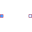
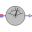
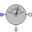

PartialsPartial models |
|
Package Contents
|
Simple friction model |
|
|  |
Partial model of two port |
|
Partial model of a single port at the left |
|
|
Partial model of ambient |
|
|
Partial model of a single port at the bottom |
|
|  |
Partial model of absolute sensor |
|
Partial model of relative sensor |
|
|  |
Partial model of flow sensor |
Information
This information is part of the Modelica Standard Library maintained by the Modelica Association.
Package containing partial models from which all components (except Sources.AbsolutePressure) extend instantiating the medium and containing the thermodynamic equation(s) with semiLinear.